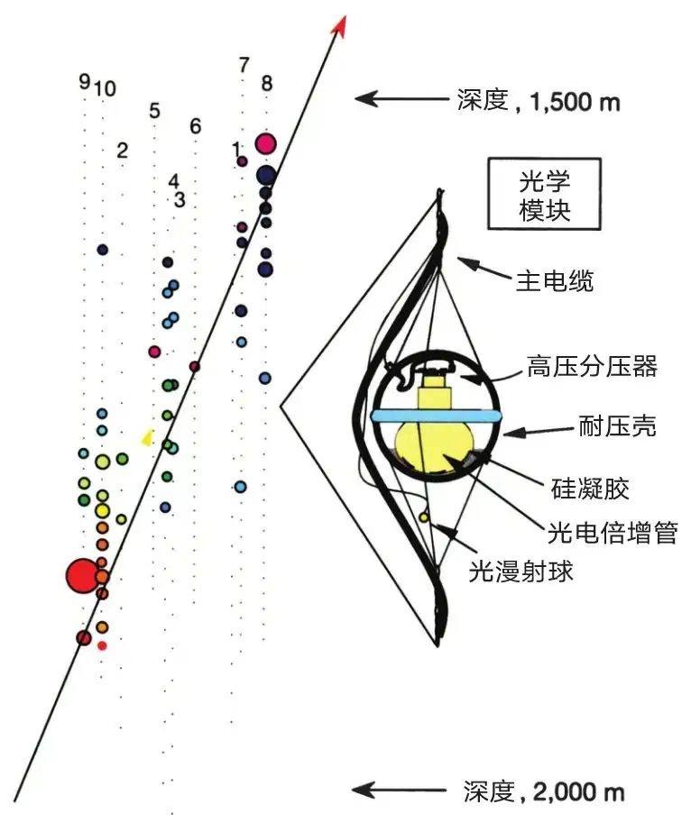
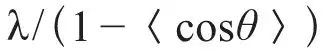
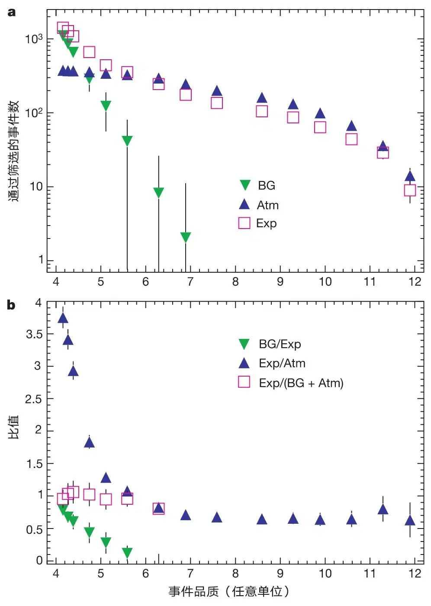
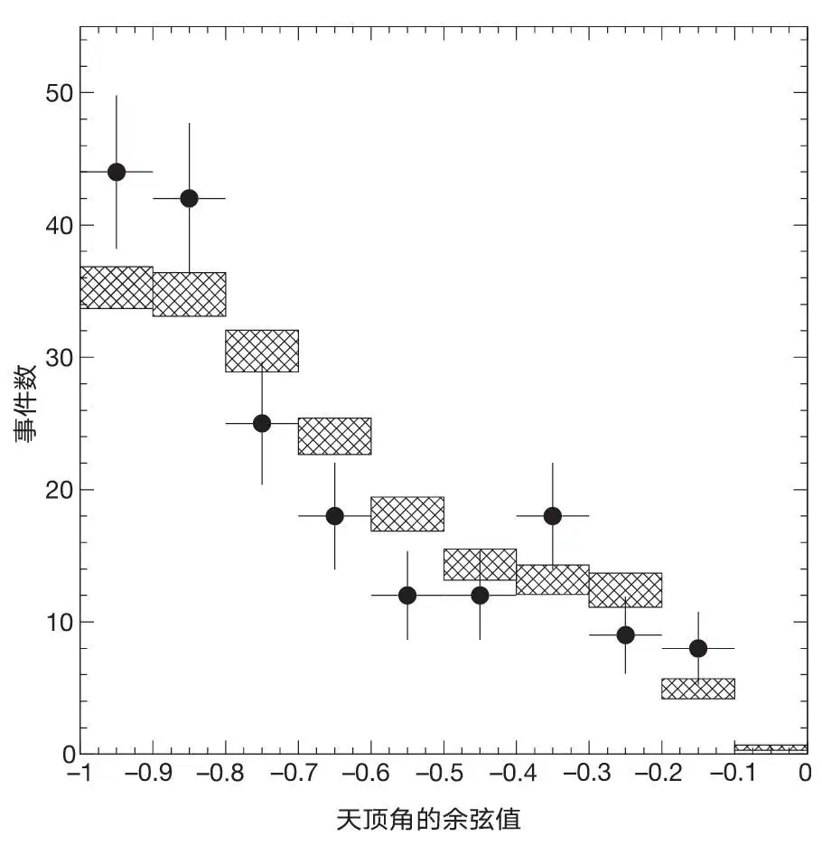
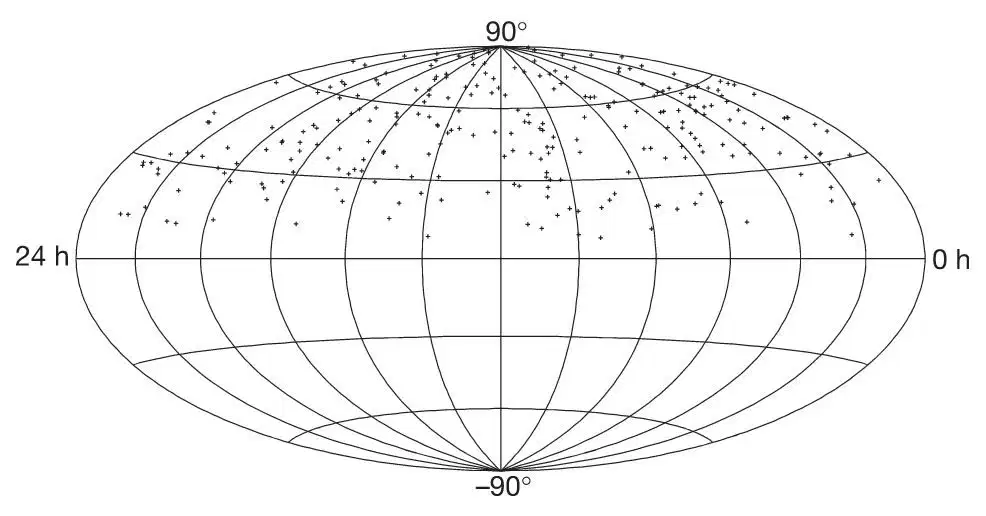

英文
英文安德烈斯等
编者按
中微子是无电荷且几乎无质量的基本粒子。它们只能通过弱力与其他物质相互作用，因此可以穿透大量物质——来自太阳的中微子就不断地流经地球。这种弱相互作用使中微子难以被检测。本文中，一个国际科学家团队报告了名为AMANDA的概念验证型实验，他们将探测器设置在南极透明的冰层中，并寻找由中微子与原子核相互作用而产生的被称为μ子的粒子发出的特征性闪光。随后的冰立方（IceCube）项目使用更大体量的冰作为探测器，目前已在南极附近运行。 英文
中微子是一种不携带电荷且质量极小的基本粒子。由于这类粒子与其他粒子的相互作用很弱，能够穿透大量的物质，因此很可能可以直接传递来自宇宙边缘以及大部分高能激变区域深处的天体物理信息[1]。然而，中微子极强的穿透力也使得对该粒子的探测变得非常困难。在以前的研究中，研究人员通过地下探测器已经探测到来自太阳和附近超新星的低能中微子[2]，以及地球大气中产生的中微子。但是，来自宇宙源的高能中微子通量很低，只能通过更大的、可扩展的探测器才能观测到，比如放置于深水[3,4]或冰[5]中的探测器。本文将报道通过基于冰的南极μ子和中微子探测器阵列（AMANDA）对向上传播的大气中微子的探测。这些结果将确立一种技术，可以用于建设千米尺度的中微子天文台，从而用于天体物理的观测[1]。 英文
发射高能宇宙射线的天体物理源也必然产生高能中微子[1]。这些源目前尚属推测，但是一般认为存在于极端剧烈环境中，比如超新星遗迹、活动星系核和伽马射线暴。这些源中，任何高能质子或原子核与物质或辐射相互作用，都会产生中微子，其中一些将具有指向地球的视线径迹。中微子与探测器周围冰层或底下岩床中的核子相互作用可以产生μ子。通过探测μ子发出的切伦科夫辐射，AMANDA可以探测到能量高于数十GeV的中微子[6]。图1给出了我们用于探测切伦科夫辐射的光电倍增管阵列，它们被埋设于冰层深处，以最大限度地减小大气中宇宙射线相互作用产生的μ子的向下通量。这些大气μ子构成了AMANDA的主要背景信号。为了确保探测到的μ子确实产生于中微子，我们将整个地球作为一个大过滤器，探测那些一定是由穿过地球的中微子产生的向上传播的μ子。探测器探测到的切伦科夫光子的相对到达时间的精度在纳秒量级，我们通过记录这些到达时间可以重建μ子的径迹。中微子与μ子的方向在夹角θν-µ≈1.5度/（Eν）1/2内共线，其中Eν单位为TeV，这可以使我们寻找到高能中微子点源。 英文

图1．AMANDA-B10探测器及其光学模块原理图。图中每个小点代表一个光学模块。在内部串，光学模块之间的距离为20 m（1到4）；在外部串，模块之间的距离为10 m（5到10）。不同颜色的圆圈表示某个事例中光电倍增管产生的脉冲，其中圆圈的尺寸大小代表该脉冲的幅度，颜色对应光子到达的时间。较早的时间用红色表示，较晚的时间用蓝色表示。图中箭头表示斜向上运动的μ子的重建径迹。 英文
向上传播的大气中微子作为源已经为人们所了解，因此可以用大气中微子验证我们的探测技术。我们分析了在1997年南极冬季获取的138天净运转时间的实验数据，并将结果在本文中予以报告。当时，实验采用的探测器由302个光学模块构成，这些模块埋设为10串，深度在1,500 m到2,000 m之间（图1）。整个探测器设备是一个圆柱体，其直径大约为120 m，高度约为500 m。每个光学模块包括一个封装于玻璃质压力容器中的8英寸光电倍增管。一根电缆用于提供光电倍增管所需的高电压，并将阳极电流信号传输到位于地面的数据采集电子设备。图1中也给出了一个满足向上运动的μ子选择标准的典型事件。根据μ子能量的不同，探测系统的有效探测面积范围从3,000 m2到40,000 m2，对应从100 GeV到高能μ子（≥100 TeV）的情形，产生后者的中微子应该来自宇宙源，比如同样产生伽马射线暴的宇宙源[7]。 英文
为了重建中微子的径迹，首先要弄清冰的光学特性。人们对此已进行了广泛的研究[8,9]。根据冰层深度的不同，蓝光和紫外光（我们所用的相关波长）的吸收长度在85 m到225 m之间变化。由平均自由程λ和平均散射角θ构成的有效散射长度

为15~40 m。我们采用最大似然方法重建μ子径迹，考虑了通过刻度测量得到的光子的散射和吸收。考虑到向下μ子的事例率远远大于向上的信号，对似然值的贝叶斯分析可以有效减小将向下μ子错误重建为向上μ子的可能性。（参考文献6以及10~13介绍了更多关于冰的光学特性、刻度以及分析技术。） 英文
在探测过程中，可能存在某些看似是向上传播的μ子的伪事件，对这种情况必须予以考虑并剔除。同时，也必须要考虑那些罕见的情况，比如μ子经过韧致辐射损失了大部分能量，或者与其他μ子同时出现的情况。为此，一系列基于μ子径迹预期产生的光子时间和空间特征图样以及基于探测器的响应的要求或者说质量标准在首次评估中用于筛选那些看似是向上运动的μ子事件。比如，瞬发（即未被散射）光子触发大量光学模块，该事件就具有较高的品质。通过不断提高选择的标准（或者说“判选”），我们可以相应地剔除更多的向上μ子伪事件背景，同时仍然保留大部分真正向上运动的μ子。由于构成筛选标准的各参数具有较大的优化空间，我们对相同的实验数据进行了两种不同且互相独立的分析，分别称为A分析和B分析。A、B两种分析结果给出的向上运动的μ子数目相当，分别为153和188。这两个结果分别与其相应的蒙特卡罗模拟进行比较，发现二者在事件数目、共同事件数目以及如下所述的大气中微子预期特性方面彼此一致。 英文
如图2a所示，我们将实验事件的数量与背景和信号的模拟结果作为（相同）品质判据的函数进行了对比，对以下三类事件——实验数据、模拟的大气中微子产生的向上运动的μ子、模拟的向下运动的宇宙射线μ子背景——进行了分析。为了简化演示，多个筛选标准合并成了一个代表整体事件品质的参数。图2b显示了图2a绘制的数量间的比值。随着品质水平的增加，模拟背景与实验数据的比值以及实验数据与模拟信号的比值，同时迅速减小，其中前者趋于0而后者趋于0.7。在上述范围内，实验数据与另两者（模拟的背景和信号）之和的比值几乎保持不变。因此，我们得出以下结论：品质筛选标准可以剔除实验数据中误重建的向下运动的μ子，直至与信号相比达到可以忽略的水平；经过严格筛选后，实验数据与模拟大气中微子信号的行为规律相同。蒙特卡罗模拟预测的信号事件数的估算不确定度为+40% / -50%，该不确定度包括了高能大气中微子通量、光学模块的实地灵敏度以及冰层准确光学特性的不确定度。因此，在上述估算不确定度内，观察到的实验和模拟比值（0.7）与期望值（1.0）相符合。 英文

图2．实验数据与期望值比较。A分析中重建实验数据中向上运动的μ子事件的数目（用Exp表示），与模拟宇宙射线μ子背景（BG）以及模拟大气中微子（Atm），作为“事件品质”的函数进行了比较。其中“事件品质”这一变量表示用于增强信号的若干筛选标准的组合的严格程度。图中对比起始于品质水平4。筛选标准由若干参量构成，这些参量包括重建天顶角（>100度）、重建径迹的最大似然值、探测光子的拓扑分布以及记录未散射光子的光学模块数目。通过比较蒙特卡罗模拟中微子事件和背景事件的相对排斥率，可以确定筛选标准的最佳水平。b图给出了a图中数量的比值。 英文
图3给出了B分析中188个事件的天顶角分布与模拟大气中微子信号的对比，其中蒙特卡罗绝对事例率根据实验值进行了归一化。在统计不确定度之内，测量事例率随天顶角的变化与模拟结果一致。我们注意到，探测器较高的几何尺寸会更利于探测到垂直方向的μ子。在A和B两种分析中，观测到的向上运动的μ子的到达方向如图4所示。统计分析表明，这些样本尚不足以提供点源存在的证据。图2与图3已经证明实验与大气中微子信号模拟的一致性；同时对比其他变量（具体研究结果即将发表）的话，我们得出以下结论：AMANDA观测到的上行μ子事件主要是由那些能量介于50 GeV到若干TeV之间的大气中微子产生。事件样本中的背景事件估计为15%±7%，这是由于错误的径迹重建造成的。 英文

图3．重建径迹的天顶角分布。图中数据点是取自分析B的实验数据，阴影矩形框表示大气中微子事件的模拟，其中矩形框的宽度代表误差棒。模拟的整体归一化已经经过调整以拟合数据。中微子振荡对通量及通量的天顶角依赖的可能影响可以通过超级神冈实验的测量估算出来[20]，在我们研究的能量范围内，该影响预计很小。 英文
根据筛选的事件样本与大气中微子产生的μ子的一致性，特别是触发大量光学模块的高能事件不存在超出的情况下，我们可以确定地外弥散中微子通量的上限。假设激波加速具有E－2形式的硬谱特征，那么我们预计灵敏度的量级将达到 。该值很小，位于很多模型预测的通量范围之内[14-19]，其中一些通量会更大些[15,16]。不过近期的估算值大多数相对更小[17-19]。我们设想可以通过更长时间的曝光以及更好地确定μ子的能量来改善灵敏度，目前的灵敏度水平和这些设想说明了大面积探测器检验理论模型的能力。这些理论模型假设活动星系发出的TeV能量的光子来源于强子，如果没有观测高能中微子能力，证实或排除这些模型将会非常困难。 英文
。该值很小，位于很多模型预测的通量范围之内[14-19]，其中一些通量会更大些[15,16]。不过近期的估算值大多数相对更小[17-19]。我们设想可以通过更长时间的曝光以及更好地确定μ子的能量来改善灵敏度，目前的灵敏度水平和这些设想说明了大面积探测器检验理论模型的能力。这些理论模型假设活动星系发出的TeV能量的光子来源于强子，如果没有观测高能中微子能力，证实或排除这些模型将会非常困难。 英文

图4．向上传播的μ子事件在天空中赤纬和赤经上的分布。图中所示的263个事件取自A和B两个分析中包含的共同的上行μ子事件。μ子的真实角度和重建角度之差的中值约为3~4度。 英文
寻找来自伽马射线暴的中微子，寻找磁单极子和超新星坍缩，寻找来自地球中心的冷暗物质，这些工作也在进行之中。而且，仅使用138天的数据，就可给出与那些已长时间运行的小型地下中微子探测器相媲美或更好的上限（见参考文献10~13）。 英文
从1997年到1999年，在AMANDA-B10周围的同心圆柱体中又添加了9串探测器。这个更大的探测器被称为AMANDA-II，由677个光学模块构成，在更大的角度范围内改善了μ子的接收度。目前，这个更巨大的阵列正在采集数据。但是无论是理论模型预言[14]还是由超高能宇宙射线通量观测值推导出的[19]高能中微子通量都是非常低的，以至于为了观测研究这些中微子，探测器的有效面积需要达到一平方千米[1,14]。所以，目前正在计划研制更大的探测器，该探测器被称为冰立方（IceCube），由分布在80根串上的4,800个光电倍增管构成。这一计划中的中微子探测器将具有1 km2大小的有效面积，其探测能量阈值接近100 GeV，对于高能事件的μ子的指向精度优于1度。总而言之，通过南极冰盖下的中微子望远镜观测到中微子意味着人们朝40多年前就试图建立的高能中微子天文学研究领域迈出了重要的一步，尽管这一设想一度被认为是极难甚至是无法实现的目标。 英文
（金世超 翻译；曹俊 审稿）